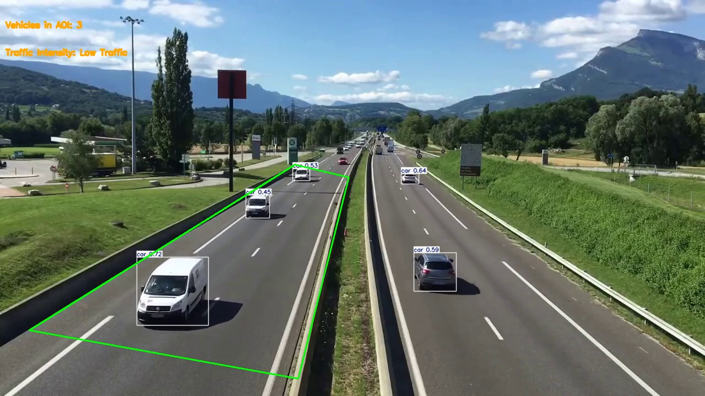

PARA-EASE an IOT based system
ParaEase is an affordable, IoT-based smart system designed to assist differently-abled individuals in living safer, more independent lives. Using sensors (gas, motion, light, temperature, touch) connected to an ESP32 microcontroller, the system monitors environmental conditions, detects emergencies, and enables remote control of room lighting via the Blynk cloud platform. It alerts caretakers through Telegram and a buzzer, ensuring timely response. With a setup cost under ₹1000, ParaEase offers a cost-effective, accessible solution for enhancing daily living and emergency responsiveness for physically challenged users.
CNN-Based Deepfake Classification
This project uses a CNN to classify deepfake images, trained on 5110 frames extracted from the Celeb-DF v2 dataset (real and fake). The model has three convolutional layers with PReLU and max-pooling, followed by a sigmoid output. It’s trained with L1 loss (Adam, 10 epochs) on 128×128 images. Performance is evaluated using accuracy, classification report, and confusion matrix.

Real time traffic density analysis using Yolo V11
This project implements a real-time traffic analysis system using the YOLOv11 object detection model. It processes video frames to detect vehicles, evaluates traffic intensity, and logs the results. The system allows users to define an Area of Interest (AOI) for vehicle counting and since I made use of a pre-trained YOLO v11 model, there is not much thing to do about performance evaluation.

Image editor app using Python and Pillow
This code creates a simple app for editing images using Python and a library called Tkinter. The app has a window where you can load an image, rotate it, make it black and white, sharpen it, or mirror it. There are buttons for each of these actions. You can also save your edited image or go back to the original version. When you load an image, it gets resized to fit the window.

Chat bot development using Google Dialogue Flow
I developed a conversational AI chatbot using Google Dialogflow, enabling a new window to create powerful stand alone chatbots and virtual assistants that streamline customer interactions and improve user engagement. With my expertise, I've successfully created and integrated chatbots into a dummy website and messaging platforms like Telegram, leveraging the advanced capabilities of Google Dialogflow. Please understand that it's not a fully developed product but a demo. Well, it actually does all the work done by a stand-alone bot and I can ensure you that if you want a complete version of this product, you can contact me on my LinkedIn to discuss the time and other things.

Spine Sooth a rule based expert system demo
This project provides a very good idea of a rule-based system in AI consisting of a UI, a Rule, and KnowledgeBase. I made this project to experiment with what a rule-based expert system is and how it works. It is not a complete product but more like a demo to a rule-based expert system.

Customer information maangement system using Sq lite and python
The customer information management system is a simple Python application integrated with SQLite, offering a straightforward approach to managing customer information. Utilizing SQLite's embedded database engine, the system operates seamlessly without the need for a separate server process. Despite its command-line interface, the application efficiently handles customer data operations, including insertion, display, updating, and deletion.

Netflix Movie Recommendation system using Machine Learning
This is an AI project. What we do here is take in 10000+ data on movies and recommend the user 5 movies that they searched or viewed using the content-based filtering approach with machine learning.

Data visualization using Power BI
This project contains data visualization projects done using Microsoft Power BI software, which is very famous for data visualization and analytics. The visualization is in the form of dashboards making it easier and simple to understand.

Contact management sustem using Sq lite and python
The Contact Management System is a Python application that streamlines contact management tasks through a SQLite backend database. It offers essential functionalities such as adding, deleting, updating, and checking contacts. Implemented with a command-line interface for simplicity and portability, it ensures easy accessibility and efficient handling of contact information.